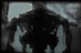

|

The Emergence of ALife
Kenneth E. Rinaldo is a transdiciplinary artist living and working in San Francisco. He is currently on the Board of Directors of YLEM, an international group of artists using science and technology. His works have been shown in the U.S. and abroad at such shows as Image Du Future in Montreal, Canada, the V2 Dutch Electronic Arts Festival 1995, and SigGraph 1993 in Los Angeles and have been featured on television and magazines including Wired, The Discovery Channel's Know Zone and Cnet. His academic background includes Computer Science, Communications Research and Art. And he received his MFA in Conceptual Art from San Francisco State University.
I first met Ken Rinaldo in 1994 when I was co-curating an exhibition of interactive electronic and digital media. I was immediately intrigued by The Flock, an interactive A-life sculpture. Over the course of the exhibition, I was able to spend a lot of time with them. And what was most striking for me was the way they seemed to change from elegant flowing dancing beings to spasmodic twitching creatures that recoiled when approached.
For this issue of Switch, I spoke with Ken about his work with artificial life, his ideas about artist's and their role in scientific research and television amongst other things.
---
PDQ: What is significant about artificial life as a medium for artists?
KER: I think that artists, from the very beginning of time, have been trying
to not only create an illusion of life but have been trying to discover
how to capture an elan or spirit in an art work. If you look at the caves
in Lascaux for instance and the drawings of bison on the cave walls. That
was an attempt to recreate reality in a pictorial way. They knew it wasn't
the bison but they knew that it would communicate some kind of likeness
of a bison. You can look at artists like Michelangelo and his desire to
give the illusion of life by modeling every muscle. Being so aware of every
movement of the muscle and trying to give an illusion of life, or Leonardo
with his paintings and how carefully he chose to mimic skin tones. You can
start at the beginning of art and keep working your way up find realist
artists trying to create some sort of illusion of realism in their work.
And I think, in a sense, that is all an attempt at a form of artificial
life. You can even look back at people like Vaucanson that did the amazing
duck that would eat, and quack so realistically that people thought it was
a real duck. It wasn't artificial life but it was an attempt toward mimesis
and creating the illusion of life. Even the Jaquet-Droz family that had
created automatons that could write was an attempt at creating an illusion
of life. Of course, with these early works we know that they were stone
and they were cam driven, they were not alive, even though they tried to
create and illusion of life. But, with artificial life and with systems,
non linear systems in particular, for the very first time artists have access
to these tools and can create something that is perhaps living or create
an illusion of life that takes us to far beyond the bison on the wall or
the muscle of Michaelangelo's sculpture. It is interesting that you mention
the Lasceaux caves, Michaelangelo, and the Realists in relation to artificial
life.
---
PDQ: When I was listening I began to see a pattern developing.
First we have the ancients drawing on cave walls as a way to appease the
spirits, we can only assume that it had some spiritual function in relation
to a very important part of their survival, the hunt. And we move on to
Michaelangelo and his work which was created as a tribute to reveal the
glory and power of God. Now as we have become more secular the realists
try to duplicate human vision, making the illusion as close to reality as
possible. Our latest efforts are to create life, in a sense taking over
what god does, take his place.
KER: I suppose in the core of our being we have the desire to procreate
and to create life. It's something that we can't remove from the fundamental
aspect of all life, are to recreate and I suppose it does make sense that
we have a desire not only to do that in terms of creating children, but
also in terms of creating artworks that move towards mimesis or move toward
some kind of mimicking of living systems.
PDQ: Do you think there is some inherent drive or desire in human beings
to replace God? What is it about humans that drives them to want to duplicate
what exists?
KER: I think humans, and I actually believe that all living systems are
what we call emergent systems. We know that DNA arises from RNA and we know
that RNA arises from simpler molecules. Molecules themselves have a form
of intelligence which is inherent to their interaction with other molecules,
in the way they combine, and if your given billions and billions of years,
and they estimate that life has existed for about 3.6 billion years on earth
and the earth is maybe about 4.5 billion years, that molecules will organize
into something higher than those higher molecules or RNA will organize into
DNA which has organized into cellular systems which have joined together.
Margulis has this theory about non-oxygen breathing prokaryote cells ingesting
oxygen breathing prokaryote breathing cells which became the ancestor of
mitochondria which are able to convert oxygen to chemical energy packets.
Later, she speculates that these prokaryote ingested and organism with a
whip-like tail that allowed mobility. From there you have cells working
together to create higher systems. I actually believe that this attempt
to create artificial life and even all of the machines that surround our
lives, the wires, the pipes and everything is just a universe that is tending
toward complexity. I think intelligent systems tend toward complexity. I
think that's why we're getting smarter (laughs) I believe we're getting
smarter. Now the machines are ingesting the machines. Intellegence is imbeded
everywhere.
---
PDQ: What kinds of contributions can artists bring into research on artificial life?
KER: I think what's interesting is that artists are not limited by areas
of expertise. For instance, a computer scientist goes into a particular
school and learns a particular area of expertise that... it's not very cross
associative. It draws on other areas but for the most part is very focused
on computer science. I think what is so interesting about artificial life
in particular is that it's a kind bi-association of many areas of expertise.
It looks at biological systems, computers, mathematics, dynamics and non-linear
systems and it attempts to organize inorganic matter to behave in organic
ways and forms. So I think artists are very excited and I think artists
in particular can bring together different kinds of cross associations or
specialties which really permit new perspectives that are not limited by
scientific procedures and approaches which can be limited and very focused.
Artists are driven by different things. Their not trying to create a robot
that can make something but a robot that creates a form of unique aesthetic
and asks questions. For me the way The Flock was organized and sang to each
other with telephone tones and moved was a form of aesthetic far outside
of the realm of creating robots which are purposeful. We are living an intensive
information rich society where we can draw from thousand of different areas
of expertise. And I think what's great about artists is that they can draw
from any of those things without limits or business considerations. Free
association underlines the creative process. I think that it's hard to say
what artists working in artificial life will bring to it. But perhaps aesthetics
or a works form, as opposed to something purposeful, has much to teach.
PDQ: Aside from its importance in research related to the understanding
of living systems, is there anything else that we can learn from artificial
life?
KER: I actually believe that the primary purpose of a-life is that were
going to learn that the nature and organization of matter really doesn't
have as much to do with the substance as it has to do with the organization
of that substance. I really do believe that is the primary thing that we
are going to learn from artificial life. I think that eventually we will
create systems that are indeed considered artificial life. I don't think
we've gotten anywhere remotely close to that. We've created things that
probably have the intelligence of a virus at this point or a snail perhaps.
But you asked if there is there is anything outside that we can learn from
artificial life. Maybe we'll learn sensitivity to real forms of life. If
our machines can think and breath maybe it will somehow make us more sensitive
to real life, or perhaps not. Maybe it will make us less so.
---
PDQ: It seems that, from what I have seen, we haven't
gotten past the point of creating simulations of artificial life. When I
think ahead to the future, I begin to wonder what will happen when we are
actually able to create new life forms. Are there any moral issues related
to the use/creation of artificial life?
KER: As we start to get into the higher forms of artificial life there may
be some moral issues involved. I think morality in a sense really grows
out of our understanding of human pain. Our understanding and philosophy
of morality grow out of our being able to project and sense what other people
are feeling. Perhaps, as artificial life reaches higher and higher levels
of intelligence, maybe it will make us reflect back upon ourselves. But
again I sort of doubt it. The increasing mechanization of the world doesn't
appear to make us more moral at all. In fact, at this juncture, it seems
to make us less so. In the list of questions you faxed to me, you asked
if television was artificial life? That sort of relates to what I want to
say about that. I think TV is a very good example of a kind of one way connective
image disemenator. It's a crude one directional neural net which has moral
implications, because it effects behavior and it effects behavior for the
masses in a negative way. I'll never forget reading that people perceive
the world to be a lot more dangerous than it actually is because producers
have found that showing multiple murders on TV somehow compels you, it raises
your blood level. It manipulates our physiology in a kind of rubbernecking
reflex. We'll buy more products. But in the mean time, TV is subtly changing
the way our children see the world, and the way we see the world. It is
creating the world and our perception all in one. So for me, this is very
immoral. It's an immoral use of a technology that has and intrinsic power
to inform, to make human beings better, to allow them to help each other.

PDQ: In some sense, television almost has a life of it's own now. It
seems that there is very little control on either end. It kind of drives
itself. When I was thinking about that question I was thinking about television
as an analogy to artificial life. Like reproduction, TV has this kind of
insidious way of reproducing itself. And it's the hype around TV that creates
that.
KER: I like Paul Verilio's analogy of these commercial songs being a kind
of ideational virus. You find yourself sitting sometime and suddenly this
little ditty shows up in your head. It's like you can't get this ditty out
of your head because the TV has somehow managed to plant it so successfully
in our brains. That's an odd form of artificial life, isn't it?
PDQ: It sounds like your describing some sort of parasite.
KER: Yes it is. exactly. It's like a parasite. It's a form of virus. And
it doesn't inform us like we were all told TV was going to do. It infects
us. Like a virus.
---
PDQ: Well, actually,
the TV question was a kind of tongue-in-cheek question. But I have another
question related to the moral implications of using artificial life. I think
what I was trying to get at was your thoughts regarding the ethical use
of artificial life. If we're going to create artificial forms of life and
their actually living then I have some concerns about how they would be
used. You just said that when we start dealing with the higher forms of
artificial life that those kinds of ethical issues become a concern. But
why wouldn't those concerns exist with lower forms? The reason I ask is
because of my understanding of environmental systems and the necessary part
that lower forms play in our existence and the function of natural systems.
And also, I know that you have two pieces that incorporate living creatures,
a fish in one, and tubifex worms in the other. So could you describe those
two pieces and address your ethics in relation to those pieces and maybe
in a broader sense.
KER: Yeah, I think that's an excellent question. The first piece is a tightrope
walking fish tank. The piece came about when I was doing research about
fish. I realized that fish have exquisite vision and that they see far outside
of the water. It occurred to me that we have all of these fish tanks which
are very small spaces that don't allow them to explore outside the realm
of their tank. So I came up with the idea for this tightrope walking tank.
And the question was, what if you gave a fish the ability to determine where
it went? Sort of how we pop into the car to drive up the street or to go
somewhere that we want to go. And my question was, would the fish use it
and would the fish be comfortable? My primary concern was that the fish
was comfortable. In fact, the fish that I chose specifically was chosen
because I felt that it would be comfortable in this environment because
it's a non-aerated tank. It uses a Beta fish or Siamese Fighting fish which
are very aggressive fish and they live in little puddles in Thailand, very
small spaces. Since this tank couldn't be too big, it was going to be on
a tightrope, and I couldn't aerate the tank, these were the ideal fish.
So the piece sort of arose out of these concerns of how I could make the
fish more comfortable. But then, for me, it started to become a metaphor
for what we're doing to the earth right now. I quite agree with you that
we, in our pursuit for intelligent systems and our seeming endless appetites
that ...In a sense what I've done with this fish is kind of what we're doing
with the oceans. We're surrounding them with buildings. We're pouring effluents
into the oceans that are killing the oceans. We're killing lower forms and
we're not seeing the total interdependent nature of the world. Some call
it the Gaia system. We have to understand that everything is related and
lower forms need to exist in order for the higher forms to exist. To me,
there is no morality to that. It's just a practical issue of survival. Richard
Dawkins speaks of the selfish gene.
The second piece is called Technology
Recapitulates Phylogeny which comes from a quote by Earnest Heackel
which was "Ontogeny recapitulates Phylogeny." What that means
is that Heackel and other scientists like Glenn Gould more recently have
discovered that the child developing in the mother's womb, the ontogeny
of the child reflects the phylogenetic development of human beings from
a single celled creature up to what we are. So in other words, in the womb
there is a time when the baby has rudiments of gills, there is a time when
the baby has rudiments of fins, There is a time when the baby appears to
be more like a worm than anything else. So in a sense, we're seeing the
logic of organic systems being reflected, recapitulated. And what this piece
meant is that I think we're starting to understand complex systems and the
overall interdependent nature of the earth itself. The worms and these systems
are a dynamic model to understand interdependence and sentience. Their tree
structures reflect circuit boards, brain cells, roots, and even mitochondria.
One of the reasons that artificial life is so important to me is because
I really see myself as more of an ecologist than anything else. I'm trying
to point out to people that these fish on the tight rope, even though I
did make every attempt to make it comfortable, and indeed these fish on
the tightrope often live longer than the ones I have in plain bowls, interestingly
because they seem to be having more fun moving back and forth. so I am also
trying to push it in peoples faces and force them to ask the question, well
gee is this what we're doing to the oceans? Are we slowly draining the oceans
and making them into human systems which aren't really sensitive to the
interdependent complex nature of organic systems?
---
PDQ: Is what you do art, science, or something else? How
is your work perceived by artists/scientists/the general population?
KER: I guess actually, I don't believe that there is as much of a difference
and this kind of relates to some of the things we were talking about earlier
about finding an aesthetic of functionality, for instance, or an aesthetic
may tell us something deeper. I don't actually believe that there is as
much of difference between art and science as many would believe. There
are quite a few contemporary writers writing about this very subject. They
believe that artist were more responsible than scientists for some of the
contemporary ways of seeing. Is there a relationship between the surrealists
and quantum space time theory? I think that science has always been necessary
for art. I think art is a kind of science in a sense. I think artists show
an amazing sense of intentionality. They ask a question. They systematically
find some materials to help answer that question. Because artists are also
dealing with perception, I think it also points back to the sciences. A
question is only valid in the universe in which it's created. Everybody
looks at an artist like Leonardo Divinci and they say, "oh when are
the arts and sciences going to be combined like they were back then?"
I think that's happening now and I think it was happening when the Impressionists
were working with light. They were concerned with perception and ways of
seeing. I think that those are the same questions that scientists are asking.
However, I doesn't mean that scientists and artists are using the same approaches
and therein lies the greatest difference.
PDQ: What do you think we can learn about ourselves from your work?
KER: I think that we can learn, and one of the things I was trying to show,
especially by having these three systems be stand alone computers first
(essential survival needs where met first) and then only through their inter-communication
were they allowed to emerge into this kind of group organized creature.
This points to our own biology and the biology of every living creature
and the biology of the interactions of all living creatures. Life itself
is an emergent property created through trillions of cells working together.
consciousness is an emergent property of trillions of cells...not that I
fully understand consciousness. But that I think that's what it points to
directly. That we are a kind of supra-organized being of many different
cells that have somehow emerged into creatures that can now show intentionality
and have intelligence and can further develop. And then all of these creatures
come together to create societies with belief systems. Now we're on the
verge, with telecommunications and TV, of emerging into this kind of world
nation. It's a very exciting time.And also very scary.
---
PDQ: The
flock seems like much of the artificial life I've seen. They are very far
from cognitive or conscious beings. But there was something about flock
that was kind of unpredictable, and in some ways like humans. Despite the
fact that they are programmed the same, they don't act similarly nor do
they act as their expected to.
KER: Yes unpredictable very much like human beings. And that's what's so
interesting about cognition, we believe we show our thoughts and yet we
only show what we're thinking, by our behavior. With The Flock, the form
is unprecedented. So it's very difficult to climb inside its circuits and
try to figure out why it's doing what it's doing. We know that they all
have the same systems and they're reacting to what they react to locally,
before they'll react to what they react to as a group. In other words, one
arm will be more concerned with itself getting hurt before it will be concerned
with showing a higher level of group behavior.
PDQ: Will your flock evolve? Do you foresee imbuing flock with broader
cognitive abilities or incorporating other sensing capabilities like temperature
or olfactory senses?
KER: Even now The Flock has adaptive abilities. There are algorithms in
the software written by Mark Grossman that allow The Flock to adjust to
whatever the average sound level is in the room. That was something we had
to add after showing the work at Siggraph to stop them from moving all of
the time. They were designed to respond to sound and move in the direction
of the sound to show that they were sensing the sound, to show robotic intentionality.
But what we found was that the average sound level in the room would change
so dramatically from other machine exhibits that time that they never seem
to stop dancing. Mark was able to write an algorithm that would allow them
to respond to the loudest sound they heard within an average sound level.
So that's kind of an adaptive ability.
Indeed The Flock will evolve. I hope to use methods of genetic algorithms
to allow a new Flock to evolve it's own behavior. Actually that was the
original idea but because of programming time and constraints it just didn't
head in that direction. Instead we used a subsumtion architecture that you're
probably familiar with through Rodney Brooks and some of the work that's
been done at M.I.T. It's this kind of onion leveled approach to programming
where the fundamental behaviors have to do with self survival of the creature
and once individual needs are met they move onto higher and higher levels
of behavior like group behaviors. The Flock will continue to evolve.
---
PDQ: Do you believe that your flock is alive?
KER: I think that the Flock is a form of life. It's interesting to look
at research that's been done into viruses for instance. I'm always intrigued
and encouraged to hear that people aren't sure where life begins. We know
that viruses show certain aspects of living systems as James Greer Miller
has defined the 20 subsystems that all living systems should have. Viruses
with RNA evolve and change but we're not quite sure if they're alive. Even
when you see molecular interactions, you wouldn't call one molecule interacting
with another a form of life and yet the molecules themselves have a form
of intelligence which is intrinsic to their structure and their environmental
interactions. So, yeah I think the flock is alive.
PDQ: I remember a professor talking about software as being alive, that
software was capable of doing and reacting in ways that were not part of
it's functionality.
KER: I agree. I'm always excited and scared to hear stories about the telephone
switching networks. These switching networks are completely autonomous and
they will route calls the most efficient way. But for some reason, once
in a while, the switching networks go crazy and nobody quite understands
why. I am always fascinated to hear about software systems that show emergent
properties or properties of evolution. There are theories of life itself
which say that life in a sense is a kind of mutation of something. Back
to God, people have said that God created life from clay. There are researchers
that believe that clay may indeed have been the origin of life. As water
moved through clay, it would cause certain chemical changes in the clay
that were mutations for the clay. Once the mutation caught on, it would
spread through the clay and soon the clay itself would have undergone a
complete structural change allowing for the next level of molecular evolution.
So when I hear about computers, complex systems, software systems and viruses
on computers they do seem to have elements and aspects of living systems
such as the ability to evolve and mutate.
PDQ: I have always been fascinated with the progression that technology
has been taking toward more and more autonomous systems.
KER: That gets back to the moral issues. We already know that robots which
are not intelligent, well they have a level of intelligence but they're
autonomous...
PDQ: Intelligent but not conscious.
KER: Yeah they're not conscious. But we already know that they're putting
human beings out of work. So you asked about moral issues. What if we do
have a system that is so bright that it puts everybody out of work and it
can be mass produced or it can mass produce itself. Will human beings just
become the...I mean sometimes I feel like I'm just here to service the machines
that I have in my life. Who's serving who.
---
PDQ: I think
that's probably the case for most machines regardless of how complex they
are. But as they become more complex we are more subject to their needs.
I have often said that regardless of how much we want to design systems
that are "user friendly" I feel that more and more we are adapting
to the technology. It's not adapting to us.
KER: I actually see it as an interesting co-evolution. It was fascinating
for me to hear on the radio the other day that they're discovering things,
for instance that bluejays actually make tools. And for me the beginning
of all of this is the tool. It's the use of an object outside of the body
that has sent us down this path of finding better intelligent tools to get
whatever we want to get done.
PDQ: One of the things that I have fantasized about when I think of the
future of intelligent systems and artificial life, especially those which
are capable of reproducing themselves, is the possibility of intelligent
autonomous life forms becoming so advanced that they are no longer interested
in creating or building for us. I see them building better tools for themselves,
making their existence simpler, more efficient. Leaving us out of the loop.
Then they create their own culture and social structure centered around
their own needs.
KER: The use of cars is kind of like that. We've completely restructured
the environment. We've knocked out our trees and our grass lands and we've
put in roads. We now have cars and we're always very comfortable in them
and we love the freedom that they give us. But in the meantime, it's completely
transformed our environment to be more comfortable for machines than for
human beings. And it seems like a lot of our comforts have gone that way.
When I walk downtown, amongst all of the skyscrapers, it seems like a very
inhospitable, inhuman environment. There is nothing terribly comfortable
about having the sun blocked from me because a super technical superstructure
is blocking it. And I think that's all the results of mechanization and
robotics and complex systems. One of the philosophies of my work is that
we have a lot to learn from natural systems. And I think that scientists,
robotisists, computer scientists and a-life people are really understanding
that, that natural systems are going to teach us about interdependence and
about interdependent systems. They are trying not to make systems that are
one dimensional that won't really think or be considerate of other things
in their environment. Paul Hawkins talks about making products that are
intrinsically designed to be used and to pass on into another form of evolved
thing and just degrade naturally for instance, or be able to be used for
some other thing. So in other words, not thinking of the product itself
as just whatever it's intended use was but thinking of the after life of
the product and what other systems it's going to go into.
---
PDQ: What
is your next project? Are you going to be doing any more work with artificial
life?
KER: I have just finished a show with San Francisco artist Amy Youngs. The
show was called disMbody. What interested me about that notion was
that we are less and less aware of our bodies because we are extending our
senses so far out. Not only through television, but through every form of
media and medium. We don't really form a conception of the self anymore
through our direct experience but through the experiences of others that
we see on the media or the information we hear. So this show was concerned
with those issues of how we've become disembodied. Even the nature of language
is that of a disembodiment. It's not something you feel directly and viscerally.
It's ideational. It's virtual. It exists outside of the self. One of my
next projects is a piece that just looks at the kind of hypnotic light aspects
that TV and commercials use to hypnotize you, to seduce you. Basically it's
a TV that's focused onto a parabolic lens that amplifies the light. It's
called Watchers and it shows you the kind of hypnotic nature of the TV light
itself. After that I plan on doing more work with fish and worms and juxtaposing
those forms with other tree like structures. I am interested in forms that
show some kind of intelligence. I'm fascinated by circuit boards and the
way they spread themselves out almost like neurons into a space interconnected,
interstitial. I'm fascinated by roots and branches and the simplicity of
those things in permitting intelligent living system.
PDQ: When you talk about television and the hypnotic aspect of the light
I was amused. I have always thought of television as the evolution of the
campfire. When I was a kid, I used to love to just stare at the fire when
we went camping. It was just this bizarre multicolored light that was fascinating
to watch as it danced. In a lot of ways, my attraction to television is
similar to that. Often my brain is not engaged and I am simply staring at
the television. Just the other day, my friend and I where watching TV during
one of our TV sessions and I was struck by the vivid images that were passing
in front of me. The images were so lush and beautiful and this was just
a commercial.
|